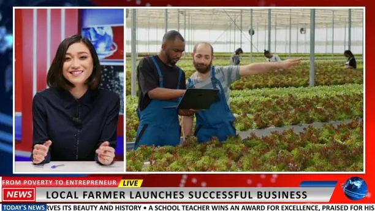

❝
"Before AgroLink, I had to sell my tomatoes at ₹4/kg to a middleman. Now I get ₹18/kg directly from supermarkets in Hyderabad. My children are going to school now."
Ravi Kumar
Paddy & Vegetable Farmer
📍 Nellore, Andhra Pradesh
AgroLink connects farmers and fisheries directly to markets — eliminating middlemen, ensuring fair prices, and building sustainable livelihoods.
Farmers Registered
Fisher Families
Income Generated
TRUSTED BY LEADING INSTITUTIONS
Government
Finance
UN Agency
Government
Philanthropy
Corporate
Government
Philanthropy

Years of Impact

WHO WE ARE
AgroLink is a registered NGO dedicated to transforming the agricultural and fisheries ecosystem through direct market linkages. We work in 14 states across India, partnering with smallholder farmers and coastal fishing communities to ensure they receive fair value for their hard work. By eliminating exploitative intermediary chains, we help producers earn up to 40% more income while providing consumers with fresh, traceable produce at fair prices. Our model is built on transparency, technology, and trust.
✔ Fair & transparent pricing
✔ Direct buyer-seller connections
✔ Cold chain & logistics support
✔ Digital literacy training for farmers
✔ Sustainable fishing practice advocacy
OUR IMPACT
Every number represents a family whose livelihood improved through direct market access and fair trade.
Smallholder farmers with direct market access
Average rise in producer income after joining
Across coastal and inland agricultural zones
Retailers, hotels, and institutional buyers
WHAT WE DO
Our integrated approach addresses every barrier that keeps farmers and fishers from accessing fair markets — from infrastructure to information.
Direct connections between smallholder farmers and institutional buyers — supermarkets, hotels, and government procurement — with price discovery tools and contract farming support.
Empowering fisher cooperatives with real-time market access, cold chain connections, and direct sales channels to restaurants, processors, and urban consumers.
Shared cold storage facilities, aggregation centers, and last-mile transport infrastructure to reduce post-harvest losses and maintain product quality.
A mobile-first digital platform enabling producers to list produce, track orders, access real-time pricing data, and receive payments directly to their bank accounts.
Training programs on sustainable farming practices, food safety standards, post-harvest handling, and business skills to improve produce quality and market readiness.
Formation and strengthening of Farmer Producer Organizations (FPOs) and fisher cooperatives to improve collective bargaining power and shared resource access.
THE PROCESS
From registration to payment in four straightforward steps — designed for rural producers with minimal digital literacy required.
Farmers and fishers register through our mobile app or field agents. We verify land/fishing rights and create a digital producer profile.
Producers list available harvest with quantity, quality grade, and preferred delivery window.
Our platform matches listings to verified buyers at transparent, pre-negotiated prices.
Logistics partners collect produce and payments are transferred directly to bank accounts within 48 hours.
Registration is free. Our field officers will assist you through the entire onboarding process in your local language.
SUCCESS STORIES
Real stories from the producers whose lives transformed when they gained direct access to fair markets.
 Farmer
Farmer
❝
"Before AgroLink, I had to sell my tomatoes at ₹4/kg to a middleman. Now I get ₹18/kg directly from supermarkets in Hyderabad. My children are going to school now."
Paddy & Vegetable Farmer
📍 Nellore, Andhra Pradesh
 Fisheries
Fisheries
❝
"Our women's cooperative now supplies directly to three hotel chains in Bhubaneswar. We have a cold room, a weighing machine, and dignity in our work."
Fish Cooperative Leader
📍 Puri, Odisha
 Farmer
Farmer
❝
"The digital platform helped me know the market price before harvest. I planned my crop accordingly and made the best returns in 10 years."
Soybean & Pulse Farmer
📍 Latur, Maharashtra
LATEST UPDATES
 Partnership
Partnership
March 12, 2024
A landmark agreement opens export channels for 3,000 registered farmers to access international markets.
Read More → Impact Report
Impact Report
February 5, 2024
Our 2023 report documents record impact with 12,000 active producers and 850 buyer partnerships.
Read More →
Program LaunchJanuary 18, 2024
Breaking language barriers, the platform now supports multiple regional languages for seamless access.
Read More →Whether you're a farmer, fisher, buyer, or supporter — we'd love to connect. Our team will reach out within 24 hours.
TOLL FREE HELPLINE
Mon–Sat, 8am–8pm
EMAIL US
We reply within 24 hours
HEAD OFFICE
Field offices in 14 states